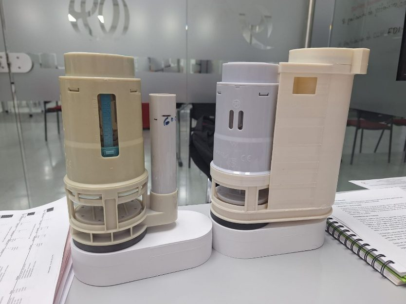
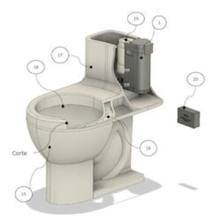

NC2024/0013637
PATENTEPATENTE – SISTEMA DE CONTROL DE OLORES
SISTEMA MIXTO DE DESCARGA DE AGUA Y CONTROL DE OLORES PARA SANITARIOS CON TANQUE CISTERNA
- Inventor
- Martín Mesa Espinel – Marcos David Mesa
- Sector
- Otros sectores
- Contacto
- 📞 3102623052